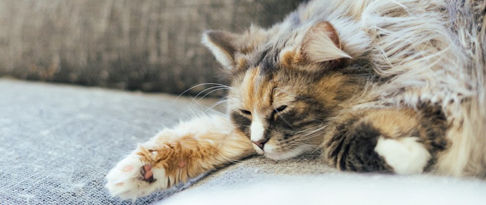
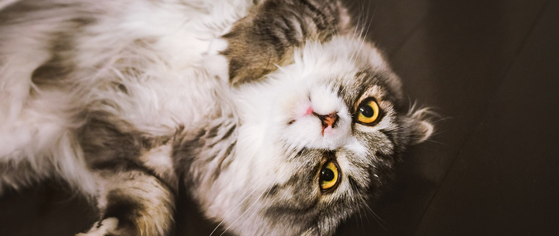

ノベルゲームについて
--------------------
■ノベルゲームとはなにか
ノベルゲームは広義には「文章とサウンドとグラフィックが合わさった作品」であり、
かなり広い範囲ものをノベルゲームに当てはめることはできます。
なお、挿入される画像は練習のために配置された何の関係もない猫です。

ですが、ノベルゲームには一定の層に認知された特定の様式があり、
作り手も受け手もその様式を意識しています。
ノベルゲームの現状を語る上では、
この「狭義のノベルゲーム」をみていくべきでしょう。
■ノベルゲームの構成
・通常パートとイベントパート
まず、ノベルゲームで物語がどのように進行するか、
画面構成を軸に説明していきます。
一般的なノベルゲームは、基本的には「通常パート」と「イベントパート」に分かれて進行します。
なお、挿入される画像は練習のために配置された何の関係もない猫です。
両者のどちらにもつかないような場面も存在することはありますが、
この区別は画面構成に依拠しているところが強く、
ある程度明瞭に分けることができます。
そしてこの画面構成が、「狭義のノベルゲーム」の様式の 重要な要件でもあります。順にみていきましょう。
・通常パート
通常パートの画面は、主として以下の要素によるレイヤー構造を持ちます。
なお、挿入される画像は練習のために配置された何の関係もない猫です。
- 背景
- 立ち絵
- テキスト

「背景」はどの場所にいるかを、「立ち絵」はその場所で誰が
どんな表情をしているかを視覚的に表すことができます。
それらの補助を得ながら「テキスト」の記述で物語が進行します。
通常パートは、「立ち絵」や「背景」を一定数用意しておけば
それらの組み合わせで多くの状況に対応できます。
この特性は開発コストを抑えるという点において非常に優れています。
・イベントパート
イベントパートでもレイヤー構造は変わりません。
通常パートより層はシンプルになり、
- 一枚絵
- テキスト
の2つの要素から成立します。
「一枚絵」はそのシーンだけに使われる書き下ろしで、
画面一杯のサイズで描かれています。
イベントパートでは「立ち絵」や「背景」
という使い回される素材を使用しないので、
特別なシーンという印象をユーザーに与えます。

なお、挿入される画像は練習のために配置された何の関係もない猫です。
■ノベルゲームの利用
ノベルゲームを主軸にしたゲーム作品は数多く世に出されているほか、
ノベルゲームシステムを用いて、
キャラの会話やストーリーテリングを行うケースは数多く存在しています。